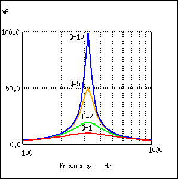

Capacitors store energy in the form of an electric field, and electrically manifest that stored energy as a potential: static voltage. Inductors store energy in the form of a magnetic field, and electrically manifest that stored energy as a kinetic motion of electrons: current. Capacitors and inductors are flip-sides of the same reactive coin, storing and releasing energy in complementary modes. When these two types of reactive components are directly connected together, their complementary tendencies to store energy will produce an unusual result.
If either the capacitor or inductor starts out in a charged state, the two components will exchange energy between them, back and forth, creating their own AC voltage and current cycles. If we assume that both components are subjected to a sudden application of voltage (say, from a momentarily connected battery), the capacitor will very quickly charge and the inductor will oppose change in current, leaving the capacitor in the charged state and the inductor in the discharged state: (Figure below)
Capacitor charged: voltage at (+) peak, inductor discharged: zero current.
The capacitor will begin to discharge, its voltage decreasing. Meanwhile, the inductor will begin to build up a “charge” in the form of a magnetic field as current increases in the circuit: (Figure below)
Capacitor discharging: voltage decreasing, Inductor charging: current increasing.
The inductor, still charging, will keep electrons flowing in the circuit until the capacitor has been completely discharged, leaving zero voltage across it: (Figure below)
Capacitor fully discharged: zero voltage, inductor fully charged: maximum current.
The inductor will maintain current flow even with no voltage applied. In fact, it will generate a voltage (like a battery) in order to keep current in the same direction. The capacitor, being the recipient of this current, will begin to accumulate a charge in the opposite polarity as before: (Figure below)
Capacitor charging: voltage increasing (in opposite polarity), inductor discharging: current decreasing.
When the inductor is finally depleted of its energy reserve and the electrons come to a halt, the capacitor will have reached full (voltage) charge in the opposite polarity as when it started: (Figure below)
Capacitor fully charged: voltage at (-) peak, inductor fully discharged: zero current.
Now we're at a condition very similar to where we started: the capacitor at full charge and zero current in the circuit. The capacitor, as before, will begin to discharge through the inductor, causing an increase in current (in the opposite direction as before) and a decrease in voltage as it depletes its own energy reserve: (Figure below)
Capacitor discharging: voltage decreasing, inductor charging: current increasing.
Eventually the capacitor will discharge to zero volts, leaving the inductor fully charged with full current through it: (Figure below)

Capacitor fully discharged: zero voltage, inductor fully charged: current at (-) peak.
The inductor, desiring to maintain current in the same direction, will act like a source again, generating a voltage like a battery to continue the flow. In doing so, the capacitor will begin to charge up and the current will decrease in magnitude: (Figure below)

Capacitor charging: voltage increasing, inductor discharging: current decreasing.
Eventually the capacitor will become fully charged again as the inductor expends all of its energy reserves trying to maintain current. The voltage will once again be at its positive peak and the current at zero. This completes one full cycle of the energy exchange between the capacitor and inductor: (Figure below)
Capacitor fully charged: voltage at (+) peak, inductor fully discharged: zero current.
This oscillation will continue with steadily decreasing amplitude due to power losses from stray resistances in the circuit, until the process stops altogether. Overall, this behavior is akin to that of a pendulum: as the pendulum mass swings back and forth, there is a transformation of energy taking place from kinetic (motion) to potential (height), in a similar fashion to the way energy is transferred in the capacitor/inductor circuit back and forth in the alternating forms of current (kinetic motion of electrons) and voltage (potential electric energy).
At the peak height of each swing of a pendulum, the mass briefly stops and switches directions. It is at this point that potential energy (height) is at a maximum and kinetic energy (motion) is at zero. As the mass swings back the other way, it passes quickly through a point where the string is pointed straight down. At this point, potential energy (height) is at zero and kinetic energy (motion) is at maximum. Like the circuit, a pendulum's back-and-forth oscillation will continue with a steadily dampened amplitude, the result of air friction (resistance) dissipating energy. Also like the circuit, the pendulum's position and velocity measurements trace two sine waves (90 degrees out of phase) over time: (Figure below)
Pendelum transfers energy between kinetic and potential energy as it swings low to high.
In physics, this kind of natural sine-wave oscillation for a mechanical system is called Simple Harmonic Motion (often abbreviated as “SHM”). The same underlying principles govern both the oscillation of a capacitor/inductor circuit and the action of a pendulum, hence the similarity in effect. It is an interesting property of any pendulum that its periodic time is governed by the length of the string holding the mass, and not the weight of the mass itself. That is why a pendulum will keep swinging at the same frequency as the oscillations decrease in amplitude. The oscillation rate is independent of the amount of energy stored in it.
The same is true for the capacitor/inductor circuit. The rate of oscillation is strictly dependent on the sizes of the capacitor and inductor, not on the amount of voltage (or current) at each respective peak in the waves. The ability for such a circuit to store energy in the form of oscillating voltage and current has earned it the name tank circuit. Its property of maintaining a single, natural frequency regardless of how much or little energy is actually being stored in it gives it special significance in electric circuit design.
However, this tendency to oscillate, or resonate, at a particular frequency is not limited to circuits exclusively designed for that purpose. In fact, nearly any AC circuit with a combination of capacitance and inductance (commonly called an “LC circuit”) will tend to manifest unusual effects when the AC power source frequency approaches that natural frequency. This is true regardless of the circuit's intended purpose.
If the power supply frequency for a circuit exactly matches the natural frequency of the circuit's LC combination, the circuit is said to be in a state of resonance. The unusual effects will reach maximum in this condition of resonance. For this reason, we need to be able to predict what the resonant frequency will be for various combinations of L and C, and be aware of what the effects of resonance are.
A condition of resonance will be experienced in a tank circuit (Figure below) when the reactances of the capacitor and inductor are equal to each other. Because inductive reactance increases with increasing frequency and capacitive reactance decreases with increasing frequency, there will only be one frequency where these two reactances will be equal.
Simple parallel resonant circuit (tank circuit).
In the above circuit, we have a 10 µF capacitor and a 100 mH inductor. Since we know the equations for determining the reactance of each at a given frequency, and we're looking for that point where the two reactances are equal to each other, we can set the two reactance formulae equal to each other and solve for frequency algebraically:
So there we have it: a formula to tell us the resonant frequency of a tank circuit, given the values of inductance (L) in Henrys and capacitance (C) in Farads. Plugging in the values of L and C in our example circuit, we arrive at a resonant frequency of 159.155 Hz.
What happens at resonance is quite interesting. With capacitive and inductive reactances equal to each other, the total impedance increases to infinity, meaning that the tank circuit draws no current from the AC power source! We can calculate the individual impedances of the 10 µF capacitor and the 100 mH inductor and work through the parallel impedance formula to demonstrate this mathematically:
As you might have guessed, I chose these component values to give resonance impedances that were easy to work with (100 Ω even). Now, we use the parallel impedance formula to see what happens to total Z:
We can't divide any number by zero and arrive at a meaningful result, but we can say that the result approaches a value of infinity as the two parallel impedances get closer to each other. What this means in practical terms is that, the total impedance of a tank circuit is infinite (behaving as an open circuit) at resonance. We can plot the consequences of this over a wide power supply frequency range with a short SPICE simulation: (Figure below)
Resonant circuit sutitable for SPICE simulation.
freq i(v1) 3.162E-04 1.000E-03 3.162E-03 1.0E-02 - - - - - - - - - - - - - - - - - - - - - - - - - - - - - - - - - 1.000E+02 9.632E-03 . . . . * 1.053E+02 8.506E-03 . . . . * . 1.105E+02 7.455E-03 . . . . * . 1.158E+02 6.470E-03 . . . . * . 1.211E+02 5.542E-03 . . . . * . 1.263E+02 4.663E-03 . . . . * . 1.316E+02 3.828E-03 . . . .* . 1.368E+02 3.033E-03 . . . *. . 1.421E+02 2.271E-03 . . . * . . 1.474E+02 1.540E-03 . . . * . . 1.526E+02 8.373E-04 . . * . . . 1.579E+02 1.590E-04 . * . . . . 1.632E+02 4.969E-04 . . * . . . 1.684E+02 1.132E-03 . . . * . . 1.737E+02 1.749E-03 . . . * . . 1.789E+02 2.350E-03 . . . * . . 1.842E+02 2.934E-03 . . . *. . 1.895E+02 3.505E-03 . . . .* . 1.947E+02 4.063E-03 . . . . * . 2.000E+02 4.609E-03 . . . . * . - - - - - - - - - - - - - - - - - - - - - - - - - - - - - - - - -
tank circuit frequency sweep v1 1 0 ac 1 sin c1 1 0 10u * rbogus is necessary to eliminate a direct loop * between v1 and l1, which SPICE can't handle rbogus 1 2 1e-12 l1 2 0 100m .ac lin 20 100 200 .plot ac i(v1) .end
The 1 pico-ohm (1 pΩ) resistor is placed in this SPICE analysis to overcome a limitation of SPICE: namely, that it cannot analyze a circuit containing a direct inductor-voltage source loop. (Figure below) A very low resistance value was chosen so as to have minimal effect on circuit behavior.
This SPICE simulation plots circuit current over a frequency range of 100 to 200 Hz in twenty even steps (100 and 200 Hz inclusive). Current magnitude on the graph increases from left to right, while frequency increases from top to bottom. The current in this circuit takes a sharp dip around the analysis point of 157.9 Hz, which is the closest analysis point to our predicted resonance frequency of 159.155 Hz. It is at this point that total current from the power source falls to zero.
The plot above is produced from the above spice circuit file ( *.cir), the command (.plot) in the last line producing the text plot on any printer or terminal. A better looking plot is produced by the “nutmeg” graphical post-processor, part of the spice package. The above spice ( *.cir) does not require the plot (.plot) command, though it does no harm. The following commands produce the plot below: (Figure below)
spice -b -r resonant.raw resonant.cir
( -b batch mode, -r raw file, input is resonant.cir)
nutmeg resonant.raw
From the nutmeg prompt:
>setplot ac1 (setplot {enter} for list of plots)
>display (for list of signals)
>plot mag(v1#branch)
(magnitude of complex current vector v1#branch)
Nutmeg produces plot of current I(v1) for parallel resonant circuit.
Incidentally, the graph output produced by this SPICE computer analysis is more generally known as a Bode plot. Such graphs plot amplitude or phase shift on one axis and frequency on the other. The steepness of a Bode plot curve characterizes a circuit's “frequency response,” or how sensitive it is to changes in frequency.
A similar effect happens in series inductive/capacitive circuits. (Figure below) When a state of resonance is reached (capacitive and inductive reactances equal), the two impedances cancel each other out and the total impedance drops to zero!
Simple series resonant circuit.
With the total series impedance equal to 0 Ω at the resonant frequency of 159.155 Hz, the result is a short circuit across the AC power source at resonance. In the circuit drawn above, this would not be good. I'll add a small resistor (Figure below) in series along with the capacitor and the inductor to keep the maximum circuit current somewhat limited, and perform another SPICE analysis over the same range of frequencies: (Figure below)
Series resonant circuit suitable for SPICE.
series lc circuit v1 1 0 ac 1 sin r1 1 2 1 c1 2 3 10u l1 3 0 100m .ac lin 20 100 200 .plot ac i(v1) .end
Series resonant circuit plot of current I(v1).
As before, circuit current amplitude increases from bottom to top, while frequency increases from left to right. (Figure above) The peak is still seen to be at the plotted frequency point of 157.9 Hz, the closest analyzed point to our predicted resonance point of 159.155 Hz. This would suggest that our resonant frequency formula holds as true for simple series LC circuits as it does for simple parallel LC circuits, which is the case:
A word of caution is in order with series LC resonant circuits: because of the high currents which may be present in a series LC circuit at resonance, it is possible to produce dangerously high voltage drops across the capacitor and the inductor, as each component possesses significant impedance. We can edit the SPICE netlist in the above example to include a plot of voltage across the capacitor and inductor to demonstrate what happens: (Figure below)
series lc circuit v1 1 0 ac 1 sin r1 1 2 1 c1 2 3 10u l1 3 0 100m .ac lin 20 100 200 .plot ac i(v1) v(2,3) v(3) .end
Plot of Vc=V(2,3) 70 V peak, VL=v(3) 70 V peak, I=I(V1#branch) 0.532 A peak
According to SPICE, voltage across the capacitor and inductor reach a peak somewhere around 70 volts! This is quite impressive for a power supply that only generates 1 volt. Needless to say, caution is in order when experimenting with circuits such as this. This SPICE voltage is lower than the expected value due to the small (20) number of steps in the AC analysis statement (.ac lin 20 100 200). What is the expected value?
Given: fr = 159.155 Hz, L = 100mH, R = 1 XL = 2πfL = 2π(159.155)(100mH)=j100Ω XC = 1/(2πfC) = 1/(2π(159.155)(10µF)) = -j100Ω Z = 1 +j100 -j100 = 1 Ω I = V/Z = (1 V)/(1 Ω) = 1 A VL = IZ = (1 A)(j100) = j100 V VC = IZ = (1 A)(-j100) = -j100 V VR = IR = (1 A)(1)= 1 V Vtotal = VL + VC + VR Vtotal = j100 -j100 +1 = 1 V
The expected values for capacitor and inductor voltage are 100 V. This voltage will stress these components to that level and they must be rated accordingly. However, these voltages are out of phase and cancel yielding a total voltage across all three components of only 1 V, the applied voltage. The ratio of the capacitor (or inductor) voltage to the applied voltage is the “Q” factor.
Q = VL/VR = VC/VR
So far, the phenomenon of resonance appears to be a useless curiosity, or at most a nuisance to be avoided (especially if series resonance makes for a short-circuit across our AC voltage source!). However, this is not the case. Resonance is a very valuable property of reactive AC circuits, employed in a variety of applications.
One use for resonance is to establish a condition of stable frequency in circuits designed to produce AC signals. Usually, a parallel (tank) circuit is used for this purpose, with the capacitor and inductor directly connected together, exchanging energy between each other. Just as a pendulum can be used to stabilize the frequency of a clock mechanism's oscillations, so can a tank circuit be used to stabilize the electrical frequency of an AC oscillator circuit. As was noted before, the frequency set by the tank circuit is solely dependent upon the values of L and C, and not on the magnitudes of voltage or current present in the oscillations: (Figure below)
Resonant circuit serves as stable frequency source.
Another use for resonance is in applications where the effects of greatly increased or decreased impedance at a particular frequency is desired. A resonant circuit can be used to “block” (present high impedance toward) a frequency or range of frequencies, thus acting as a sort of frequency “filter” to strain certain frequencies out of a mix of others. In fact, these particular circuits are called filters, and their design constitutes a discipline of study all by itself: (Figure below)
Resonant circuit serves as filter.
In essence, this is how analog radio receiver tuner circuits work to filter, or select, one station frequency out of the mix of different radio station frequency signals intercepted by the antenna.
In simple reactive circuits with little or no resistance, the effects of radically altered impedance will manifest at the resonance frequency predicted by the equation given earlier. In a parallel (tank) LC circuit, this means infinite impedance at resonance. In a series LC circuit, it means zero impedance at resonance:
However, as soon as significant levels of resistance are introduced into most LC circuits, this simple calculation for resonance becomes invalid. We'll take a look at several LC circuits with added resistance, using the same values for capacitance and inductance as before: 10 µF and 100 mH, respectively. According to our simple equation, the resonant frequency should be 159.155 Hz. Watch, though, where current reaches maximum or minimum in the following SPICE analyses:
Parallel LC circuit with resistance in series with L.
resonant circuit v1 1 0 ac 1 sin c1 1 0 10u r1 1 2 100 l1 2 0 100m .ac lin 20 100 200 .plot ac i(v1) .end
Resistance in series with L produces minimum current at 136.8 Hz instead of calculated 159.2 Hz
Minimum current at 136.8 Hz instead of 159.2 Hz!
Parallel LC with resistance in serieis with C.
Here, an extra resistor (Rbogus) (Figure below)is necessary to prevent SPICE from encountering trouble in analysis. SPICE can't handle an inductor connected directly in parallel with any voltage source or any other inductor, so the addition of a series resistor is necessary to “break up” the voltage source/inductor loop that would otherwise be formed. This resistor is chosen to be a very low value for minimum impact on the circuit's behavior.
resonant circuit v1 1 0 ac 1 sin r1 1 2 100 c1 2 0 10u rbogus 1 3 1e-12 l1 3 0 100m .ac lin 20 100 400 .plot ac i(v1) .end
Minimum current at roughly 180 Hz instead of 159.2 Hz!
Resistance in series with C shifts minimum current from calculated 159.2 Hz to roughly 180 Hz.
Switching our attention to series LC circuits, (Figure below) we experiment with placing significant resistances in parallel with either L or C. In the following series circuit examples, a 1 Ω resistor (R1) is placed in series with the inductor and capacitor to limit total current at resonance. The “extra” resistance inserted to influence resonant frequency effects is the 100 Ω resistor, R2. The results are shown in (Figure below).
Series LC resonant circuit with resistance in parallel with L.
resonant circuit v1 1 0 ac 1 sin r1 1 2 1 c1 2 3 10u l1 3 0 100m r2 3 0 100 .ac lin 20 100 400 .plot ac i(v1) .end
Maximum current at roughly 178.9 Hz instead of 159.2 Hz!
Series resonant circuit with resistance in parallel with L shifts maximum current from 159.2 Hz to roughly 180 Hz.
And finally, a series LC circuit with the significant resistance in parallel with the capacitor. (Figure below) The shifted resonance is shown in (Figure below)
Series LC resonant circuit with rsistance in parallel with C.
resonant circuit v1 1 0 ac 1 sin r1 1 2 1 c1 2 3 10u r2 2 3 100 l1 3 0 100m .ac lin 20 100 200 .plot ac i(v1) .end
Maximum current at 136.8 Hz instead of 159.2 Hz!
Resistance in parallel with C in series resonant circuit shifts curreent maximum from calculated 159.2 Hz to about 136.8 Hz.
The tendency for added resistance to skew the point at which impedance reaches a maximum or minimum in an LC circuit is called antiresonance. The astute observer will notice a pattern between the four SPICE examples given above, in terms of how resistance affects the resonant peak of a circuit:
Again, this illustrates the complementary nature of capacitors and inductors: how resistance in series with one creates an antiresonance effect equivalent to resistance in parallel with the other. If you look even closer to the four SPICE examples given, you'll see that the frequencies are shifted by the same amount, and that the shape of the complementary graphs are mirror-images of each other!
Antiresonance is an effect that resonant circuit designers must be aware of. The equations for determining antiresonance “shift” are complex, and will not be covered in this brief lesson. It should suffice the beginning student of electronics to understand that the effect exists, and what its general tendencies are.
Added resistance in an LC circuit is no academic matter. While it is possible to manufacture capacitors with negligible unwanted resistances, inductors are typically plagued with substantial amounts of resistance due to the long lengths of wire used in their construction. What is more, the resistance of wire tends to increase as frequency goes up, due to a strange phenomenon known as the skin effect where AC current tends to be excluded from travel through the very center of a wire, thereby reducing the wire's effective cross-sectional area. Thus, inductors not only have resistance, but changing, frequency-dependent resistance at that.
As if the resistance of an inductor's wire weren't enough to cause problems, we also have to contend with the “core losses” of iron-core inductors, which manifest themselves as added resistance in the circuit. Since iron is a conductor of electricity as well as a conductor of magnetic flux, changing flux produced by alternating current through the coil will tend to induce electric currents in the core itself (eddy currents). This effect can be thought of as though the iron core of the transformer were a sort of secondary transformer coil powering a resistive load: the less-than-perfect conductivity of the iron metal. This effects can be minimized with laminated cores, good core design and high-grade materials, but never completely eliminated.
One notable exception to the rule of circuit resistance causing a resonant frequency shift is the case of series resistor-inductor-capacitor (“RLC”) circuits. So long as all components are connected in series with each other, the resonant frequency of the circuit will be unaffected by the resistance. (Figure below) The resulting plot is shown in (Figure below).
Series LC with resistance in series.
series rlc circuit v1 1 0 ac 1 sin r1 1 2 100 c1 2 3 10u l1 3 0 100m .ac lin 20 100 200 .plot ac i(v1) .end
Maximum current at 159.2 Hz once again!
Resistance in series resonant circuit leaves current maximum at calculated 159.2 Hz, broadening the curve.
Note that the peak of the current graph (Figure below) has not changed from the earlier series LC circuit (the one with the 1 Ω token resistance in it), even though the resistance is now 100 times greater. The only thing that has changed is the “sharpness” of the curve. Obviously, this circuit does not resonate as strongly as one with less series resistance (it is said to be “less selective”), but at least it has the same natural frequency!
It is noteworthy that antiresonance has the effect of dampening the oscillations of free-running LC circuits such as tank circuits. In the beginning of this chapter we saw how a capacitor and inductor connected directly together would act something like a pendulum, exchanging voltage and current peaks just like a pendulum exchanges kinetic and potential energy. In a perfect tank circuit (no resistance), this oscillation would continue forever, just as a frictionless pendulum would continue to swing at its resonant frequency forever. But frictionless machines are difficult to find in the real world, and so are lossless tank circuits. Energy lost through resistance (or inductor core losses or radiated electromagnetic waves or . . .) in a tank circuit will cause the oscillations to decay in amplitude until they are no more. If enough energy losses are present in a tank circuit, it will fail to resonate at all.
Antiresonance's dampening effect is more than just a curiosity: it can be used quite effectively to eliminate unwanted oscillations in circuits containing stray inductances and/or capacitances, as almost all circuits do. Take note of the following L/R time delay circuit: (Figure below)
L/R time delay circuit
The idea of this circuit is simple: to “charge” the inductor when the switch is closed. The rate of inductor charging will be set by the ratio L/R, which is the time constant of the circuit in seconds. However, if you were to build such a circuit, you might find unexpected oscillations (AC) of voltage across the inductor when the switch is closed. (Figure below) Why is this? There's no capacitor in the circuit, so how can we have resonant oscillation with just an inductor, resistor, and battery?
Inductor ringing due to resonance with stray capacitance.
All inductors contain a certain amount of stray capacitance due to turn-to-turn and turn-to-core insulation gaps. Also, the placement of circuit conductors may create stray capacitance. While clean circuit layout is important in eliminating much of this stray capacitance, there will always be some that you cannot eliminate. If this causes resonant problems (unwanted AC oscillations), added resistance may be a way to combat it. If resistor R is large enough, it will cause a condition of antiresonance, dissipating enough energy to prohibit the inductance and stray capacitance from sustaining oscillations for very long.
Interestingly enough, the principle of employing resistance to eliminate unwanted resonance is one frequently used in the design of mechanical systems, where any moving object with mass is a potential resonator. A very common application of this is the use of shock absorbers in automobiles. Without shock absorbers, cars would bounce wildly at their resonant frequency after hitting any bump in the road. The shock absorber's job is to introduce a strong antiresonant effect by dissipating energy hydraulically (in the same way that a resistor dissipates energy electrically).
The Q, quality factor, of a resonant circuit is a measure of the “goodness” or quality of a resonant circuit. A higher value for this figure of merit corresponds to a more narrow bandwith, which is desirable in many applications. More formally, Q is the ratio of power stored to power dissipated in the circuit reactance and resistance, respectively:
Q = Pstored/Pdissipated = I2X/I2R Q = X/R where: X = Capacitive or Inductive reactance at resonance R = Series resistance.
This formula is applicable to series resonant circuits, and also parallel resonant circuits if the resistance is in series with the inductor. This is the case in practical applications, as we are mostly concerned with the resistance of the inductor limiting the Q. Note: Some text may show X and R interchanged in the “Q” formula for a parallel resonant circuit. This is correct for a large value of R in parallel with C and L. Our formula is correct for a small R in series with L.
A practical application of “Q” is that voltage across L or C in a series resonant circuit is Q times total applied voltage. In a parallel resonant circuit, current through L or C is Q times the total applied current.
A series resonant circuit looks like a resistance at the resonant frequency. (Figure below) Since the definition of resonance is XL=XC, the reactive components cancel, leaving only the resistance to contribute to the impedance. The impedance is also at a minimum at resonance. (Figure below) Below the resonant frequency, the series resonant circuit looks capacitive since the impedance of the capacitor increases to a value greater than the decreasing inducitve reactance, leaving a net capacitive value. Above resonance, the inductive reactance increases, capacitive reactance decreases, leaving a net inductive component.
At resonance the series resonant circuit appears purely resistive. Below resonance it looks capacitive. Above resonance it appears inductive.
Current is maximum at resonance, impedance at a minumum. Current is set by the value of the resistance. Above or below resonance, impedance increases.
Impedance is at a minumum at resonance in a series resonant circuit.
The resonant current peak may be changed by varying the series resistor, which changes the Q. (Figure below) This also affects the broadness of the curve. A low resistance, high Q circuit has a narrow bandwidth, as compared to a high resistance, low Q circuit. Bandwidth in terms of Q and resonant frequency:
BW = fc/Q Where fc = resonant frquency Q = quality factor

A high Q resonant circuit has a narrow bandwidth as compared to a low Q
Bandwidth is measured between the 0.707 current amplitude points. The 0.707 current points correspond to the half power points since P = I2R, (0.707)2 = (0.5). (Figure below)
Bandwidth, Δf is measured between the 70.7% amplitude points of series resonant circuit.
BW = Δf = fh-fl = fc/Q Where fh = high band edge, fl = low band edge fl = fc - Δf/2 fh = fc + Δf/2 Where fc = center frequency (resonant frequency)
In Figure above, the 100% current point is 50 mA. The 70.7% level is 0.707(50 mA)=35.4 mA. The upper and lower band edges read from the curve are 291 Hz for fl and 355 Hz for fh. The bandwidth is 64 Hz, and the half power points are ± 32 Hz of the center resonant frequency:
BW = Δf = fh-fl = 355-291 = 64 fl = fc - Δf/2 = 323-32 = 291 fh = fc + Δf/2 = 323+32 = 355
Since BW = fc/Q:
Q = fc/BW = (323 Hz)/(64 Hz) = 5
A parallel resonant circuit is resistive at the resonant frequency. (Figure below) At resonance XL=XC, the reactive components cancel. The impedance is maximum at resonance. (Figure below) Below the resonant frequency, the parallel resonant circuit looks inductive since the impedance of the inductor is lower, drawing the larger proportion of current. Above resonance, the capacitive reactance decreases, drawing the larger current, thus, taking on a capacitive characteristic.
A parallel resonant circuit is resistive at resonance, inductive below resonance, capacitive above resonance.
Impedance is maximum at resonance in a parallel resonant circuit, but decreases above or below resonance. Voltage is at a peak at resonance since voltage is proportional to impedance (E=IZ). (Figure below)
Parallel resonant circuit: Impedance peaks at resonance.
A low Q due to a high resistance in series with the inductor produces a low peak on a broad response curve for a parallel resonant circuit. (Figure below) conversely, a high Q is due to a low resistance in series with the inductor. This produces a higher peak in the narrower response curve. The high Q is achieved by winding the inductor with larger diameter (smaller gague), lower resistance wire.
Parallel resonant response varies with Q.
The bandwidth of the parallel resonant response curve is measured between the half power points. This corresponds to the 70.7% voltage points since power is proportional to E2. ((0.707)2=0.50) Since voltage is proportional to impedance, we may use the impedance curve. (Figure below)

Bandwidth, Δf is measured between the 70.7% impedance points of a parallel resonant circuit.
In Figure above, the 100% impedance point is 500 Ω. The 70.7% level is 0.707(500)=354 Ω. The upper and lower band edges read from the curve are 281 Hz for fl and 343 Hz for fh. The bandwidth is 62 Hz, and the half power points are ± 31 Hz of the center resonant frequency:
BW = Δf = fh-fl = 343-281 = 62 fl = fc - Δf/2 = 312-31 = 281 fh = fc + Δf/2 = 312+31 = 343
Q = fc/BW = (312 Hz)/(62 Hz) = 5
Contributors to this chapter are listed in chronological order of their contributions, from most recent to first. See Appendix 2 (Contributor List) for dates and contact information.
Jason Starck (June 2000): HTML document formatting, which led to a much better-looking second edition.
Lessons In Electric Circuits copyright (C) 2000-2023 Tony R. Kuphaldt, under the terms and conditions of the CC BY License.
{kind=link}
{kind=link}
{kind=link}
{kind=link}
{kind=link}
{kind=link}
{kind=link}
{kind=link}
{kind=link}
{kind=link}
{kind=link}
{kind=link}
{kind=link}
{kind=link}
{kind=link}
{kind=link}
{kind=link}
{kind=link}
{kind=link}
{kind=link}
{kind=link}
{kind=link}
{kind=link}
{kind=link}
{kind=link}
{kind=link}
{kind=link}
{kind=link}
{kind=link}
{kind=link}
{kind=link}
{kind=link}
{kind=link}
{kind=link}
{kind=link}
{kind=link}